Explore Salt Lake City, UT
A Brief History
Salt Lake City was laid out in 1847 by Mormon pioneers led by Brigham Young at the southeastern edge of the Great Salt Lake. Temple Square granite, grid-pattern blocks, and Union Pacific depot warehouses record how Latter-day Saint settlement, territorial status debates, and twentieth-century mining and ski-industry growth built Utah's commercial and spiritual centre.
Attractions Map
Top Sights & Activities
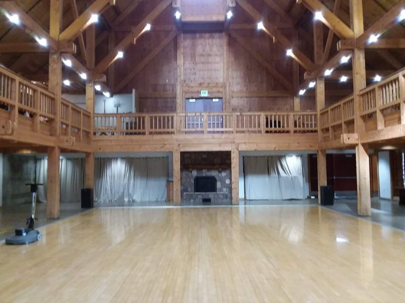
Wheeler Historic Farm
Wheeler Historic Farm is a delightful destination that offers an authentic glimpse into farm life, making it perfect for families and visitors of all ages. Guests can enjoy hands-on experiences like milking cows and taking scenic wagon rides while exploring the charming Victorian home on-site.
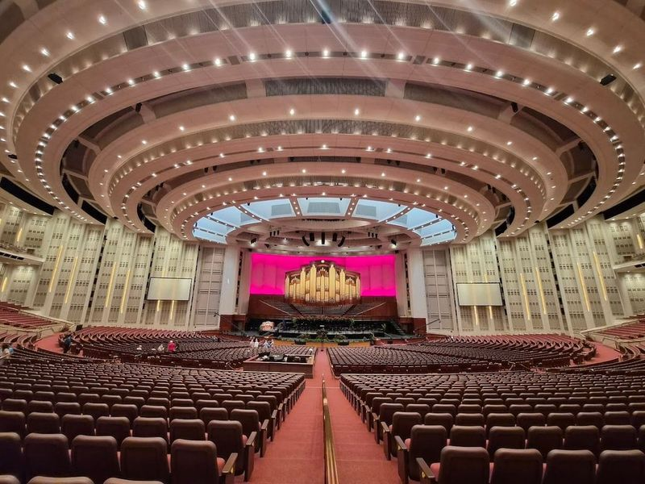
Conference Center
The LDS Church Conference Center, located in Historic Temple Square, is a modern and spacious venue that hosts religious events, meetings, music concerts, and other activities. It is the world's largest religious theater with a main auditorium seating 21,000 people and an additional proscenium theater seating 900. The center regularly hosts religious services and conferences, including the popular Music and the Spoken Word presentation by the Mormon Tabernacle Choir.
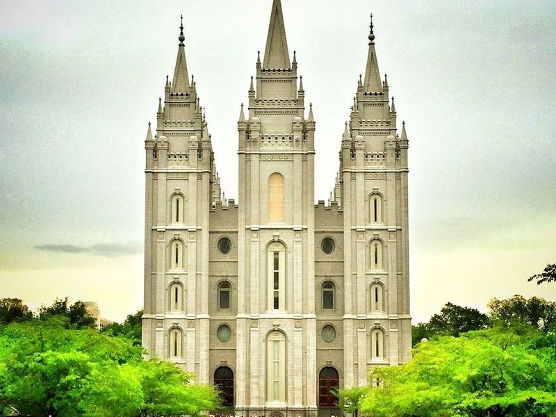
Salt Lake Utah Temple
Salt Lake Utah Temple, located at the heart of Temple Square, is a neo-gothic structure that was dedicated in 1893 after 40 years of construction. The temple's exterior features symbolic designs and decorations, with its granite-like quartz monzonite quarried from Little Cottonwood Canyon. Visitors can take free tours around Temple Square to explore the area and learn about the temple's history and its significance to Salt Lake City.
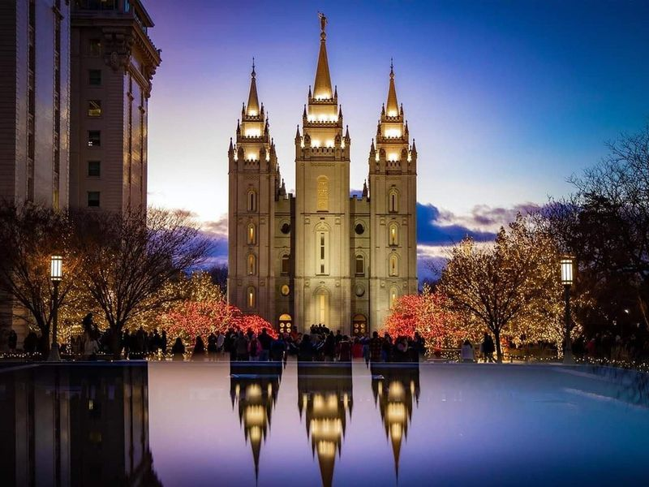
Temple Square
Temple Square, located in Salt Lake City, is a 10-acre compound and the official headquarters of the Mormon Church. The area features impressive religious buildings such as the Salt Lake Temple with its soaring spires and statue of the angel Moroni, and the Tabernacle with its gilded 11,623-pipe organ and acoustically sensitive dome-shaped auditorium.
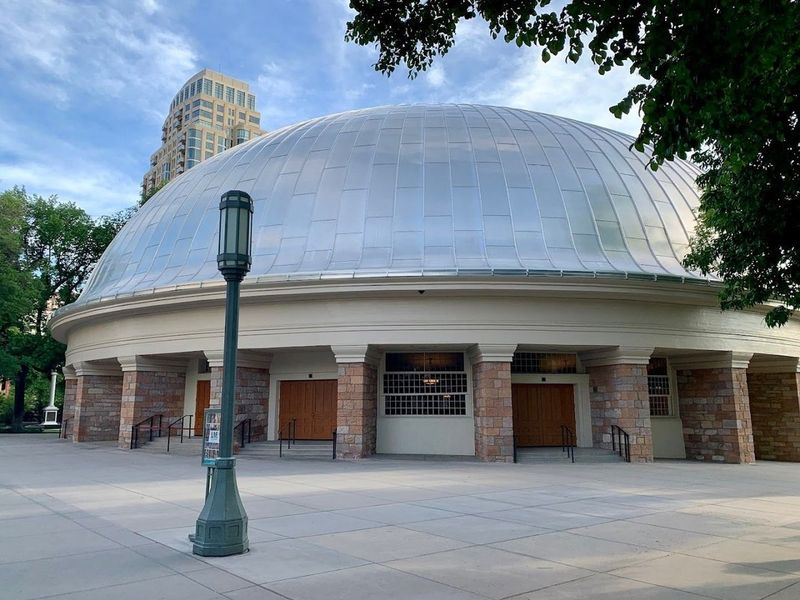
Salt Lake City Tabernacle
The Salt Lake City Tabernacle, a architectural gem In Temple Square, is not just a feast for the eyes but also a delight for the ears. Home to the renowned Tabernacle Choir at Temple Square and an extraordinary organ boasting 11,623 pipes, this venue offers visitors an auditory experience. catch captivating organ recitals throughout the week and enjoy choir rehearsals on Thursday evenings.
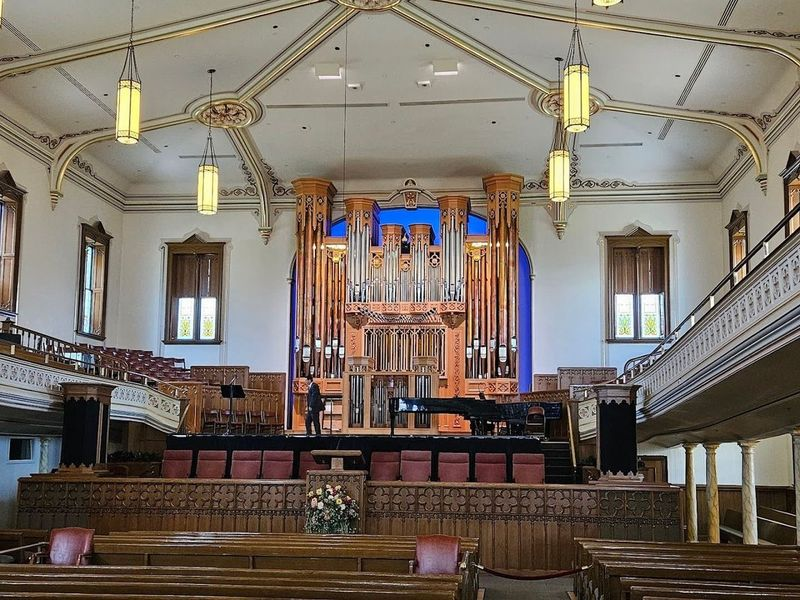
Assembly Hall
The Assembly Hall is a Gothic Revival-style building located in Salt Lake City, adjacent to the Salt Lake Temple and the Tabernacle. It was constructed in 1882 and can accommodate up to 1,400 people. The hall is owned by the Church of Jesus Christ of Latter-day Saints and is surrounded by beautiful gardens. While currently closed for renovations, visitors can usually enjoy concerts or guided tours inside.
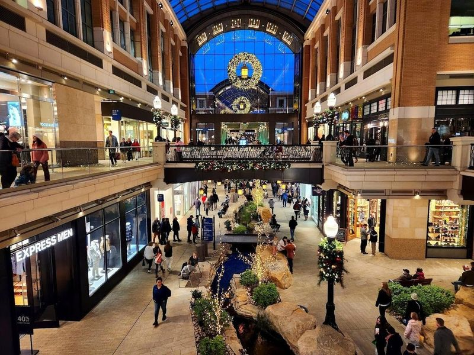
City Creek Center
City Creek Center is a premier shopping destination located near Temple Square in downtown Salt Lake. This mixed-use development offers an open-air shopping center, water fountains, residential and office buildings, and a variety of entertainment options. Visitors can enjoy free events such as fitness series, fish feeding, fountain shows, and community workshops.
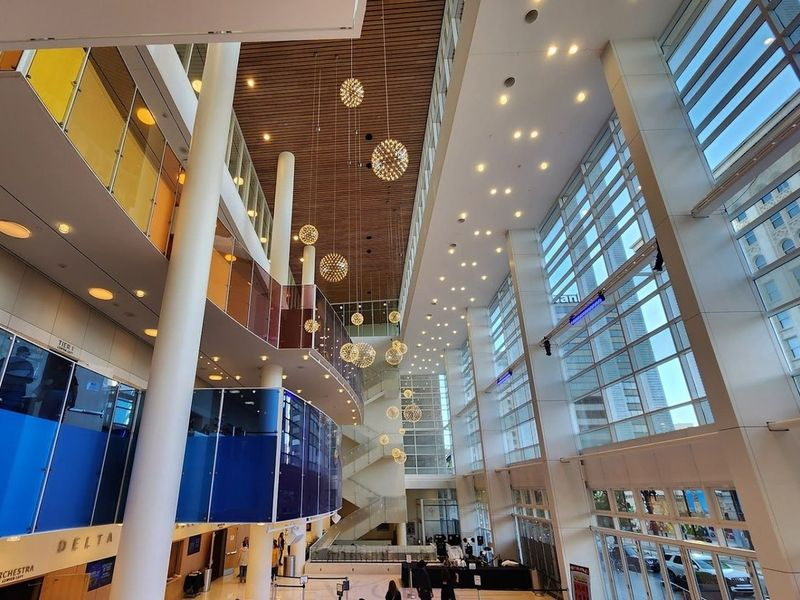
Eccles Theater
Salt Lake City's Eccles Theater is a modern performing arts venue that boasts a 2,400-seat main stage and a 145-seat black-box theater. The five-story building features a performance hall, multiple lobbies, black box space, lounges, and other event spaces. It was constructed in 2016 with all the modern amenities for corporate or private events. The theater showcases Broadway shows, concerts, comedy acts, and various entertainment events.
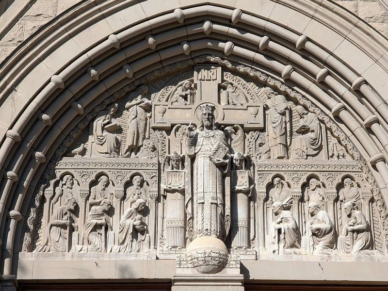
Cathedral of the Madeleine
The Cathedral of the Madeleine, located in downtown Salt Lake City, is a Romanesque church completed in 1909. The exterior boasts Neo-Romanesque architecture while the interior showcases Spanish Gothic style with ceiling frescoes and colorful stained glass windows. The church was built largely by Mormon volunteers on land gifted to the Catholics by the Mormons. It hosts religious services as well as cultural events such as organ recitals and choirs.
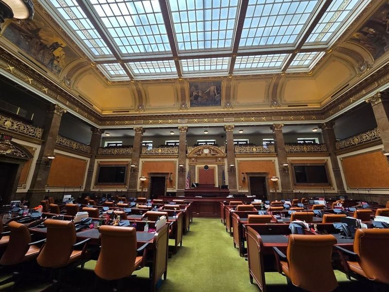
Utah State Capitol
The Utah State Capitol, built in 1916, is a neoclassical revival building located just two miles from downtown Salt Lake City. Visitors can marvel at the architecture and explore the 320,000 square foot interior with original murals, exhibits, and guided or self-guided tours that delve into Utah's rich history and government. Situated near Ensign Peak, it offers easy access to outdoor activities like hiking in Memory Grove Park and exploring City Creek Canyon.
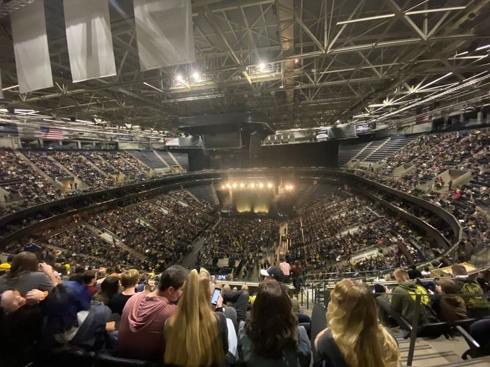
Delta Center
Delta Center is a cutting-edge venue in Utah that serves as the home of the Utah Jazz and also hosts various concerts and touring shows. Additionally, it is located near significant historical sites such as the Great Basin National Heritage Route and the Topaz War Relocation Center, offering visitors opportunities to learn about the area's unique geography, settlement history, and cultural heritage.
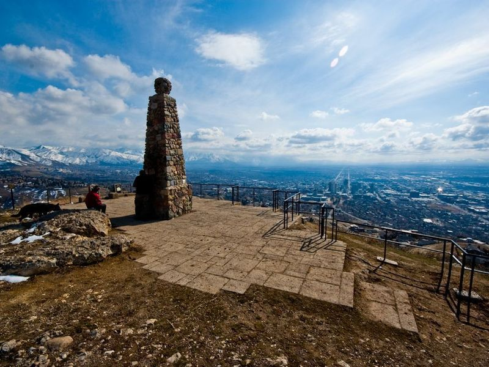
Ensign Peak Trailhead
Ensign Peak Trailhead is a short yet steep hike that offers beautiful views all the way up, culminating in a panoramic view of the Salt Lake Valley from the top. The trail features a pioneer monument with historical significance, making it a great family outing. While some assistance may be needed for younger hikers, it's generally accessible to kids. In winter and spring, the trail can get muddy, so it's advisable to bring spikes during those seasons.
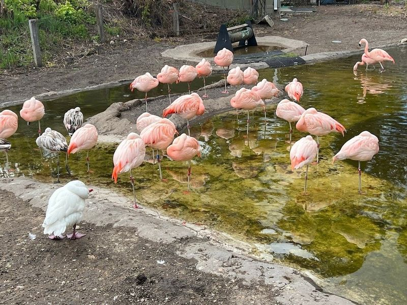
Tracy Aviary at Liberty Park
Tracy Aviary at Liberty Park is the oldest aviary in the nation, spanning 9 acres and housing over 400 birds from 135 different species. Nestled in a serene wooded setting, this family-friendly attraction offers interactive experiences such as free-flight bird shows, hand-feeding opportunities, guided tours with ornithology experts, and educational programs.
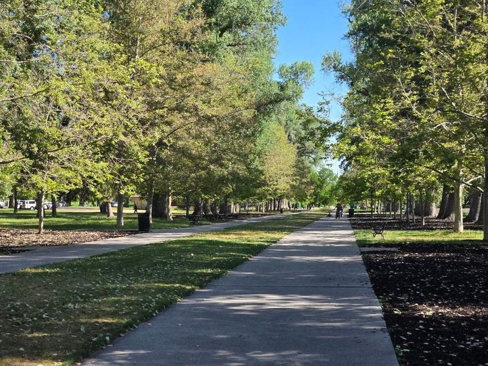
Liberty Park
Liberty Park, Salt Lake's oldest and once the largest park until the 1950s, spans 80 acres and offers a variety of attractions. Visitors can enjoy a serene lake with paddle-boat rentals, jogging paths, sports courts, picnic facilities, swimming pool, splash pad, and children's playgrounds. The park is also home to Tracy Aviary - America's oldest bird park with a diverse collection of winged creatures.
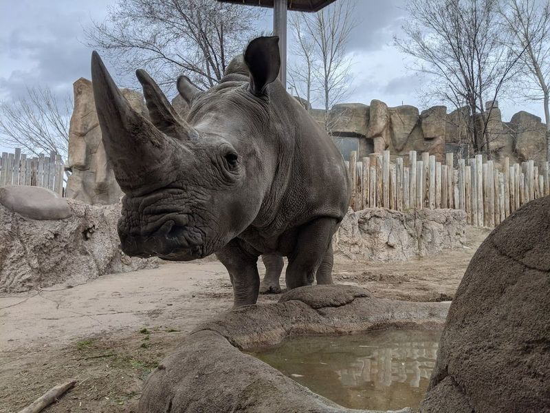
Utah's Hogle Zoo
Utah's Hogle Zoo, situated on a 42-acre site at the base of Emigration Canyon, is a family-friendly destination that has been captivating visitors since 1931. The zoo is home to over 1000 animals from more than 250 regions worldwide, including rare species like the white rhino and snow leopard.
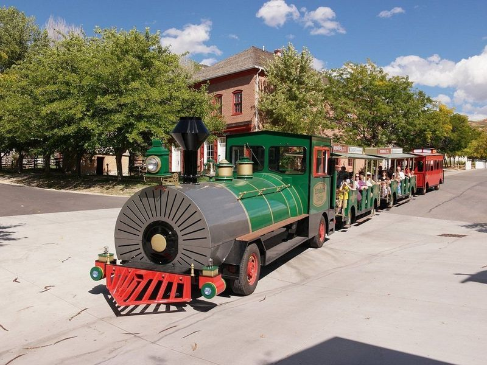
This Is The Place Heritage Park
This Is The Place Heritage Park is a 1,600-acre living-history village in Salt Lake City that commemorates the spot where the first Mormon pioneers completed their long journey. The park features enthusiastic costumed actors during the summer months and a mix of original and replica buildings such as blacksmiths, tinsmiths, and a department store founded by Brigham Young.
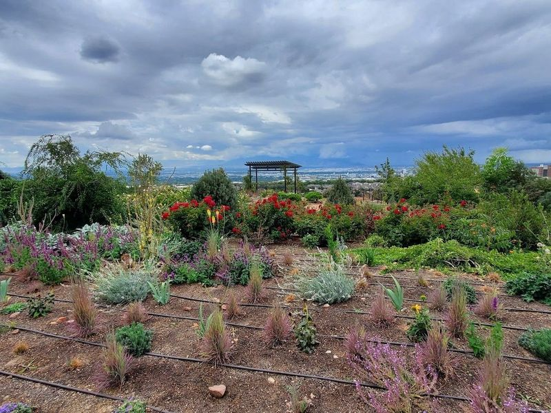
Red Butte Garden and Arboretum
Red Butte Garden and Arboretum, located on the University of Utah campus, is a sprawling 100-acre botanical garden nestled in the scenic Wasatch Mountains foothills. It boasts over 21 acres of meticulously maintained gardens, five miles of nature trails for hiking enthusiasts, and an impressive arboretum housing diverse horticultural collections. The garden is renowned for its display of daffodils and springtime blooming bulbs.